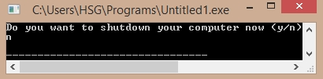

#include<stdio.h> #include<stdlib.h> int main() { char ch; printf("Do you want to shutdown your computer now (y/n)\n"); scanf("%c",&ch); if (ch == 'y' || ch == 'Y') system("C:\\WINDOWS\\System32\\shutdown /s"); return 0; } Output: 